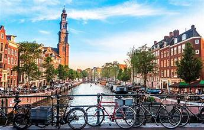

Netherlands Tour – 4 Days / 3 Nights
Immerse yourself in the charm of the Netherlands with a 4-day getaway. Discover the artistic soul of Amsterdam, the beauty of the canals and tulip fields, and experience authentic Dutch culture in the countryside.
